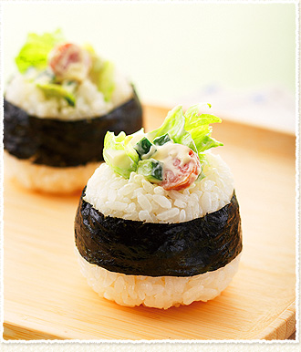

サラダおにぎり

材料（1人分）
- 特選あらびきグルメポークウインナー ... 1本
- レタス ... 20g
- きゅうり ... 1/4本(20g)
- マヨネーズ ... 大さじ2
- ご飯 ... 480g
- 「瀬戸のほんじお」 ... 少々
- 焼き海苔(大判) ... 1枚
作り方（調理時間:15分/目安）
- ウインナーは3mm幅の輪切りにし、ラップに包んで電子レンジ(500w)で30秒加熱する。レタスは小さめにちぎり、きゅうりは5mm角に切る。
- ボウルに①のウインナー・レタス・きゅうりを入れ、マヨネーズであえる。
- ご飯を6等分し、1個分のご飯の半量を手に取り(またはラップにのせ)、②の1/6量、残りのご飯の順にのせ、丸くにぎる。残りも同様に作る。
- まわりに塩をまぶしつけ、のりを6個分に切って巻き、もう一度ご飯の部分をしっかりとにぎる。
提供
伊藤ハム米久ホールディングス（株）